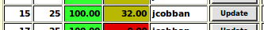

Home: Genealogy: Censuses: Status: District:
This page displays a summary of progress on the transcription of a particular division of a census of Canada.
The specific division is identified by parameters passed as part of the URL. The following parameters are supported:
| Census | The identifier of the census, including the country code. For example Census=CA1881 for the 1881 census of Canada. |
|---|---|
| Province | If the census identifier specifies a country level identifier for a census which was performed separately for each component province then the identifier of the province must be specified. For example Census=CA1861 identifies the British Imperial Census of 1861 as it applies to the colonies in British North America and therefore the individual colony must be identified by this parameter, for example Province=CE for Canada East. Census=CW1861 identifies explicitly the census of Canada West and therefore does not require the Province parameter, and it it is specified it is ignored. |
| District | The district number within the census. |
| SubDistrict | The sub-district letter or number within the district. |
| Division | The enumeration division within the sub-district if the sub-district is divided. |
| ShowProofreader | If 'true' show the user identifier of the page proofreader in a column |
| lang | The ISO code for the preferred language of the client, for example "en". |
For each page in the division this displays:

At the bottom of the table the total number of individuals transcribed in this district is displayed, along with the total number of individuals enumerated within the district, and the color-coded percentage completion for the district.
A button to enable or disable the optional display of the user identifier of the proofreader.